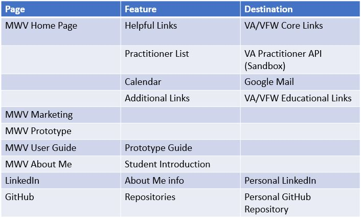
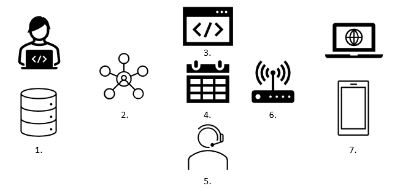
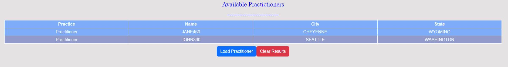

Contents
- User Guide Introduction
- Description of the Product
- Using MindWell for Veterans
- Main Interface Overview
- Key Features and Functions
- Advanced Settings
- Technical Specifications
- Relation to other Documents
- Deployed Web Link
- Github Repository
- User Support Manual
- Composition of the Product
- Images
- MindWell Site Map
- MindWell Network Overview
- MindWell Feature Usage Example (Practitioner Table Collapsed)
- MindWell Feature Usage Example (Practitioner Table Expanded)
- Local Installation and Setup
- Frequently Asked Questions (FAQ)
- Troubleshooting
- Contact and Support Information
User Guide Introduction
Indications for the Use of the User Manual
This user manual provides instructions on how to use the MindWell for Veterans software application. It is designed for both novice and experienced users to help them understand the program’s functionalities, installation procedures, and troubleshooting methods. Please read through the entire manual to fully benefit from the software.
Description of the Product
MindWell for Veterans (MWV) is an internet-based software application designed to enable Veterans to navigate the complex landscape of healthcare after they leave military service. Currently, there are many different services offered to Veterans, but due to their disjointed nature, many are underutilized because most veterans have difficulty finding, accessing, or trouble using the services that are available to them. MWV will be a centralized repository for access to all these systems utilizing an API (Application Programming Interface) connection from the Veterans Affairs (VA) Office to bring up to date information to the site allowing Veterans across the world to find the resources they need.
Using MindWell for Veterans
Main Interface Overview
The main interface consists of:
- Dashboard: Central hub for accessing all features.
- Navigation Bar: Navigation menu for different sections like Home, Marketing, Prototype, User Guide, About Me, LinkedIn, and GitHub.
Key Features and Functions
- Helpful Links
Click on the "New Project" button on the dashboard. Enter project details and save.
- Practitioner API Call
Access the "Practitioner API Data" section to retrieve and display data from the Veterans Affairs Sandbox API.
- Calender:
Use the built-in messaging tool for team communication. Share files directly within the project space.
- Additional Links
Go to the "Reports" section. Select the type of report and date range, then generate the report.
- API Integration:
Technical Specifications
- Operating System: Windows, Linux, or Mac OS (Operating Systems)
- System: NOT recommended for smart phone or tablet use
- Processor: Dual-core processor recommended
- RAM: 4GB of RAM is required for most applications but 8GB is recommended for common use.
- Disk Space: Minimum of 200MB for downloading a running a local application
- network Interface Card: Required for activation and updates
- Camera and Microphone: Required for telehealth and peer support.
Relation to Other Documents
This user manual is part of a documentation suite that includes:
- Deployed Web Link:MWV Home Page
- Github Repo:MindWellforVeterans Repository
- User Support Manual:User Support Guide
Composition of the Product
- User Interface: Intuitive and user-friendly.
- API Integration: Utilizes Veterans Affairs API for retrieving active VA practitioners (currently sandbox API)
- Calender: Calender connected to mentors willing to offer assistance
List of Images
- Image 1: MindWell Site Map 
- Image 2: MindWell Network Overview 
- Image 4: Feature Usage Example 
General Safety Prescriptions
- Data Backup: Regularly back up your data to prevent loss in case of software failure.
- Software Updates: Ensure the software is updated to the latest version to avoid security vulnerabilities and benefit from new features.
- System Compatibility: Verify that your system meets the minimum technical specifications before installation.
- Antivirus Software: Keep your antivirus software up to date to protect your system from malicious threats.
Local Installation and Setup
MindWell for Veterans is meant for webbased use but is licensed under open-source MIT license to promote continued growth and reach
- Copy the source code link (HTTPS) *** Requires a Github account & access token
Visit the official MindWell GitHub repository and download the appropriate HTTP git link.
- Create Local Repository
Move to appropriate folder that you would like to store repository
cd desktop, etc...
git clone https://github.com/jinman36/MindWellforVeterans.git
- Launch Local Instance of Repo
cd MindWellforVeterans
option 1: Will create a python server to launch site
python -m http.server
Open up browser: localhost:8000
option 2: Using VScode, Install "live Server"
Bottom right hand corner, click "go live"
Open up browser: localhost:5500
- Submitting Improvements to code base
Create new working branch with improvement features
Once branch is created, a reviewer will approve/deny and merge to main branch
Frequently Asked Questions (FAQ)
- Q1: How do I reset my VA password?
A1: Go to the MWV Home page, click on the VA Official Page link, sign in, and then click "Forgot Password" to receive a reset link.
- Q2: How can I find available VA Practitioners in my area?
A2: Navigate to the "Available Practictioners" section and use the "Load Practictioners " function to view data in a table format.
- Q3: What should I do if the software crashes?
A3: Restart the software and contact support if the issue persists.
- Q4: How do I configure the Veterans Affairs API integration?
A4: The API is already confirgured for use within the site. Simply load the data with the "Load Practictioners" button.
Troubleshooting
- Installation Issues: Ensure your system meets the requirements and try reinstalling the software.
- Performance Issues: Close unnecessary applications and check for software updates.
- API Connection Errors: Verify your internet connection and all other network connections.
- Error Messages: Refer to the error code list in the technical support manual or contact support.
Contact and Support Information
For further assistance, please contact our support team:
- Email: support@mindwell.com
- Phone: 1-800-MWV-VET
- Calender: Available on the home page, feel free to schedule an appointment.
Future Features
MWV is designed to meet the standards of a minimum viable product (MVP). This site can be scaled to react to many different customers' demands but in prototype form it is tailored to remain agile. Once further research is conducted, and more specific use cases are designed the application can be further tailored to those user needs.
Examples of scalability available:
- Mobile and Tablet friendly layouts
- Additional API connections: Facilities, Forms, Health, Loan Guaranty, VA Benefits, Verification
- Cache API data, improve data retrieval performance
- Database connectivity
- Specific user login/interface customizations